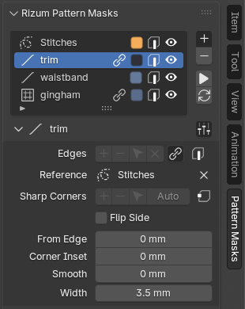

インストールと最初のマスク
インストールして、裾に沿った最初のステッチマスクをベイクします。
インストール
- Blender から：編集 › プリファレンス › Get Extensions で Pattern Masks を検索します。
- zip から：Get Extensions › ▾ › Install from Disk… を選びます。

- 1Pattern Masks タブ3D ビューで N キーを押してサイドバーを開き、このタブを押します。
- 2パネル上にレイヤーリスト、その下に選んだレイヤーの設定、さらに下にベイクがあります。
ステッチのレイヤーを追加
模様は 1 つずつリストのレイヤーになります。Stitches はオブジェクトに 1 つだけ、Line Art と Grid はいくつでも追加できます。
裾の辺を割り当てる
レイヤーは、自分に割り当てた辺に沿って描きます。Blender では、まず編集モードで辺を選びます。
ステッチを調整
寸法はモデル上の実寸（ミリ）です。モデルの大きさに左右されません。
- 1From Edge辺からステッチまでの距離。
- 2Length1 針の長さ。
- 3Gap針と針の間隔。
ベイク
.blend を保存してから、パネル下のベイクボタンを押します。レイヤーとマテリアルごとに 16 ビットの PNG が 1 枚ずつ、.blend と同じ場所の stitch_ フォルダーに保存されます。
ペイントに使う
Substance 3D Painter では、PNG を読み込んで塗りつぶしレイヤーのグレースケールマスクに使います。
ほかのソフトでの使い方とファイル名は ベイクと使い方 を見てください。
ファイルへの変更
追加するのは辺と頂点の属性だけです。形状、UV、マテリアルは変更しません。